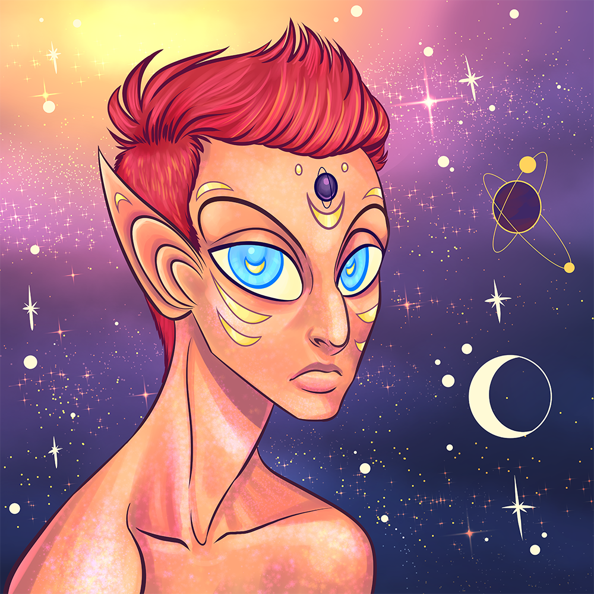
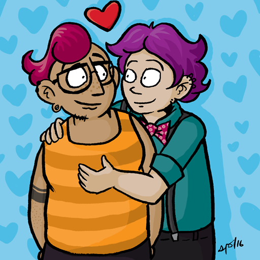
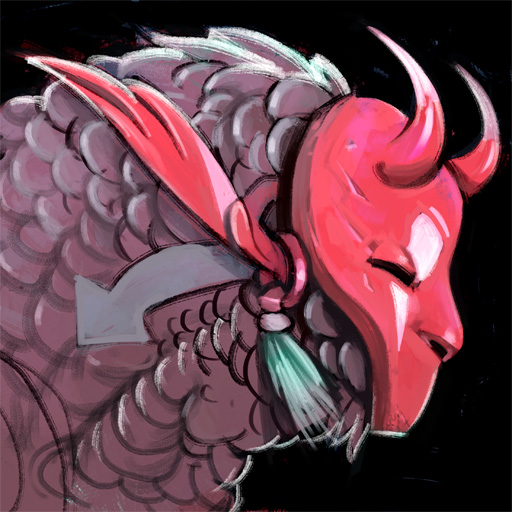
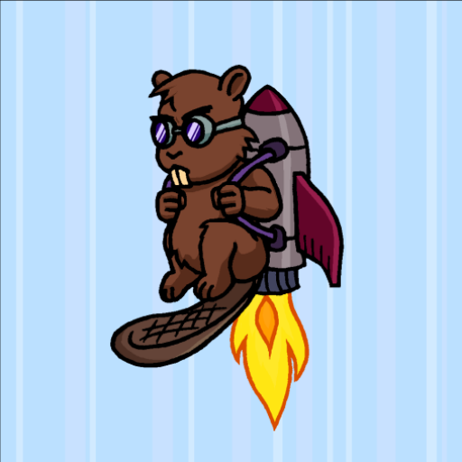

Avatars
Here is an archive of the avatars I have used. Since 2015, I commission my avatars from artists with a very loose mandate, letting them do whatever they want within as few parameters as I need. Generally, no detail beyond sizing was requested, although the exact brief varied for each artist.
All are copyrighted. Do not reuse.
Beholder
Commissioned from Monarobot in .
Swung Catte

Commissioned from Liam / Robin in .
Bast Lighthouse

Commissioned from PepperRaccoon in , and delayed from publication until whereupon I gave it a little introduction.
Cybear

Commissioned from Tayruu in , and completed in .
Māhina

Commissioned from Huriana Kopeke-Te Aho in .
Sasha

Commissioned from Sarah Lund in , completed in , and delayed from publication until to give the Cup Cat a reasonable amount of time.
Cup Cat

Commissioned from Azu in .
Snowl Herder

Commissioned from Eoghan Kerrigan in , and received in .
This was an experiment in commissioning larger pieces and selecting a crop myself for the avatar itself. While I’m pleased with the results, I’m not sure whether I’ll continue with this format going forwards. You can see the larger artwork by clicking on the avatar image.
Framing

Commissioned from Luke in .
ACLU sketch

Obtained as a donation reward for the ACLU. Only worn on Twitter for the month of .
Into Space

Commissioned from Alison Graham in .
Nekudotayim Three

Commissioned from Daniel Silva in .
Hearty Hug

Commissioned from Sam Orchard in .
Demon mask bird

Commissioned from Anne Szabla in .
Sailor whale

Commissioned from Sara Goetter in .
In , Tailsteak made a variant. It was never actually used as an avatar.

Beaver with a jetpack

Commissioned from Mason Williams a.k.a. Tailsteak in .
Léa and me

In , I changed my avatar to include my significant other of the time. This was taken on the Dune du Pyla in France.
Close-up of me
From onwards, I used an extreme close-up of my face. This was my longest-lasting avatar and probably still remains in use in some accounts I haven’t bothered cleaning up.
Blue screen of code

Around and onwards (I wasn’t on the internet much at that time), I used this as an avatar. I probably lifted it from Google Images.